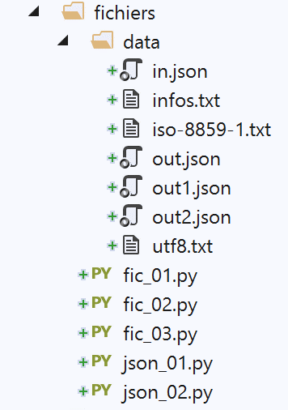
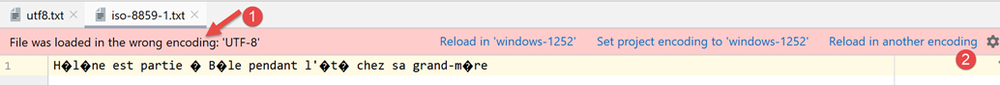

7. 文本文件

7.1. 脚本 [fic_01]：读写文本文件
以下脚本演示了处理文本文件的示例：
| # imports
import sys
# creation and sequential processing of a text file
# this is a set of lines of the form login:pwd:uid:gid:infos:dir:shell
# each line is put into a dictionary in the form login => uid:gid:infos:dir:shell
# --------------------------------------------------------------------------
def affiche_infos(dico: dict, clé: str):
# displays the value associated with key in the dico dictionary if it exists
if clé in dico.keys():
# displays the value associated with the key
print(f"{clé} : {dico[clé]}")
else:
# key is not a dictionary key dico
print(f"la clé [{clé}] n'existe pas")
# main -----------------------------------------------
# set the file name
FILE_NAME = "./data/infos.txt"
# creating and filling text files
fic = None
try:
# open file for writing (w=write)
fic = open(FILE_NAME, "w")
# generate arbitrary content
for i in range(1, 101):
# a line
ligne = f"login{i}:pwd{i}:uid{i}:gid{i}:infos{i}:dir{i}:shell{i}"
# is written to the text file
fic.write(f"{ligne}\n")
except IOError as erreur:
print(f"Erreur d'exploitation du fichier {FILE_NAME} : {erreur}")
sys.exit()
finally:
# close the file if it has been opened
if fic:
fic.close()
# open it for reading
fic = None
try:
# open file for reading
fic = open(FILE_NAME, "r")
# empty dictionary at start
dico = {}
# each line is put into the [dico] dictionary as login => uid:gid:infos:dir:shell
# read 1st line, removing leading and trailing spaces
ligne = fic.readline().strip()
# as long as the line is not empty
while ligne != '':
# put the line in a table
infos = ligne.split(":")
# retrieve login
login = infos[0]
# we neglect the pwd
infos[0:2] = []
# create a dictionary entry
dico[login] = infos
# read next line
ligne = fic.readline().strip()
except IOError as erreur:
print(f"Erreur d'exploitation du fichier {FILE_NAME} : {erreur}")
sys.exit()
finally:
# close the file if it has been opened
if fic:
fic.close()
# using the dico dictionary
affiche_infos(dico, "login10")
affiche_infos(dico, "X")
|
注：
- 第 28 行：以写入模式打开文件（w=write）。如果文件已存在，将被覆盖；
- 第30–34行：在文本文件中生成100行内容；
- 第 34 行：将一行写入文本文件。[write] 方法不会添加换行符。因此，必须在写入的文本中包含换行符；
- 第 35–37 行：处理任何异常；
- 第 37 行：中止脚本执行（但在 finally 代码块执行完毕之后）；
- 第 38–41 行：无论是否发生错误，如果文件已打开，则关闭该文件；
- 第 47 行：以读取模式打开文件（r=read）；
- 第 49 行：定义一个空字典；
- 第 52 行：[readline] 方法读取一行文本，包括行尾字符。 [strip] 方法用于移除字符串首尾的“空格”。此处的“空格”特指空白字符、换行符、分页符、制表符及其他少数字符。因此，此处的 [line] 将不包含换行符 [\r\n]（Windows）或 [\n]（Unix）；
- 第 54 行：处理该文件，直到遇到空行；
- 第 54–64 行：将文本文件导入字典 [dico]。键为 [login] 字段，值由 [uid:gid:infos:dir:shell] 字段组成；
- 第 65–67 行：处理任何异常；
- 第 68–71 行：无论是否发生错误，均关闭文件；
- 第 74–75 行：查询字典 [dico]；
文件 [data/infos.txt]：
| login0:pwd0:uid0:gid0:infos0:dir0:shell0
login1:pwd1:uid1:gid1:infos1:dir1:shell1
login2:pwd2:uid2:gid2:infos2:dir2:shell2
…
login98:pwd98:uid98:gid98:infos98:dir98:shell98
login99:pwd99:uid99:gid99:infos99:dir99:shell99
|
屏幕输出：
C:\Data\st-2020\dev\python\cours-2020\python3-flask-2020\venv\Scripts\python.exe C:/Data/st-2020/dev/python/cours-2020/python3-flask-2020/fichiers/fic_01.py
login10 : ['uid10', 'gid10', 'infos10', 'dir10', 'shell10']
la clé [X] n'existe pas
Process finished with exit code 0
7.2. 脚本 [fic_02]：处理 UTF-8 编码的文本文件
在本文档的剩余部分，我们将仅处理 UTF-8 编码的文本文件。首先，我们将配置 PyCharm：

- 在 [5-6] 中：为项目文件选择 UTF-8 编码；
要创建一个 UTF-8 编码的文件，请按以下步骤操作 (fic-02)：
| # imports
import codecs
# writing utf8 to a text file
# exceptions are not handled
file=codecs.open("./data/utf8.txt","w","utf8")
file.write("Hélène est partie à Bâle pendant l'été chez sa grand-mère")
file.close()
|
注释
- 第 2 行：为了处理文件编码，我们导入了 [codecs] 模块；
- 第 6 行：[codecs.open] 方法的使用方式与标准的 [open] 函数类似。不过，你可以指定所需的编码（在创建时）或现有的编码（在读取时）。打开后，第 6 行获得的 [file] 对象的使用方式与标准文件相同；
- 第 7 行：使用了带重音的字符，这些字符通常会根据所用的字符编码而呈现不同的形式；
结果
打开第 6 行获取的 [data/utf8.txt] 文件时，将得到以下结果：

7.3. 脚本 [fic_03]：处理采用 ISO-8859-1 编码的文本文件
脚本 [fic_03] 与脚本 [fic_02] 功能相同，但将文本文件编码为 ISO-8859-1。我们希望展示生成的文件之间的差异：
| # imports
import codecs
# iso-8859-1 writing in a text file
# exceptions are not handled
file=codecs.open("./data/iso-8859-1.txt","w","iso-8859-1")
file.write("Hélène est partie à Bâle pendant l'été chez sa grand-mère")
file.close()
|
当我们打开第 6 行创建的 [data/iso-8859-1] 文件时，会得到以下结果：

由于我们已将项目配置为处理 UTF-8 文件，PyCharm 尝试以 UTF-8 编码打开 [iso-8859-1.txt] 文件。它发现 [1] 该文件并非 UTF-8 编码，随后建议 [2] 采用其他编码重新加载该文件：

- 在 [3-5] 中：文件已使用 ISO-8859-1 编码重新加载；

如果我们回到项目设置：

- 可以看到，在[6-7]中，PyCharm指出文件[iso-8859-1.txt]应使用ISO-8859-1编码打开。因此，这属于规则[5]的例外情况；
7.4. 脚本 [json_01]：处理 JSON 文件
JSON 代表 JavaScript 对象表示法。顾名思义，它是 JavaScript 对象的文本表示形式。在此，我们将将其与 Python 对象结合使用。
待处理的 JSON 文件 [data/in.json] 内容如下：

- 在 [2] 中，我们可以看到 [in.json] 文件的文本内容可以表示一个 Python 字典。PyCharm 已对该文本进行了格式化（Ctrl-Alt-L），但即使它只在一行上，也不会产生任何影响。只要在语法上表示一个 Python 对象，文本的格式就无关紧要；
脚本 [json-01] 演示了如何使用该文件：
| # imports
import codecs
import json
import sys
# read/write file jSON
inFile=None
outFile=None
try:
# open file jSON in read mode
inFile = codecs.open("./data/in.json", "r", "utf8")
# transfer content to a dictionary
data = json.load(inFile)
# display of read data
print(f"data={data}, type(data)={type(data)}")
limites = data['limites']
print(f"limites={limites}, type(limites)={type(limites)}")
print(f"limites[1]={limites[1]}, type(limites[1])={type(limites[1])}")
# transfer the [data] dictionary to a json file
outFile = codecs.open("./data/out.json", "w", "utf8")
json.dump(data, outFile)
except BaseException as erreur:
# display error and exit
print(f"L'erreur suivante s'est produite : {erreur}")
sys.exit()
finally:
# close files if they are open
if inFile:
inFile.close()
if outFile:
outFile.close()
|
注释
- 第 3 行：为了处理 JSON，我们导入 [json] 模块；
- 第 11 行：我们将处理采用 UTF-8 编码的 JSON 文件。此处，我们使用 [codecs] 模块打开文件 [data/in.json]；
- 第 13 行：[json.load] 方法读取 JSON 文件的内容并将其存储在 [data] 变量中。该变量的类型将是一个字典；
- 第 15–18 行：为验证确实获取到了 Python 字典，我们显示其中部分元素；
- 第 20–21 行：我们执行反向操作：使用 [json.dump] 方法将字典 [data] 写入一个 UTF-8 编码的文件；
- 第 22–25 行：处理任何异常；
- 第 26–31 行：无论是否发生错误，我们都关闭可能已打开的文件；
结果
C:\Data\st-2020\dev\python\cours-2020\python3-flask-2020\venv\Scripts\python.exe C:/Data/st-2020/dev/python/cours-2020/python3-flask-2020/fichiers/json_01.py
data={'limites': [9964, 27519, 73779, 156244, 0], 'coeffR': [0, 0.14, 0.3, 0.41, 0.45], 'coeffN': [0, 1394.96, 5798, 13913.69, 20163.45], 'PLAFOND_QF_DEMI_PART': 1551, 'PLAFOND_REVENUS_CELIBATAIRE_POUR_REDUCTION': 21037, 'PLAFOND_REVENUS_COUPLE_POUR_REDUCTION': 42074, 'VALEUR_REDUC_DEMI_PART': 3797, 'PLAFOND_DECOTE_CELIBATAIRE': 1196, 'PLAFOND_DECOTE_COUPLE': 1970, 'PLAFOND_IMPOT_COUPLE_POUR_DECOTE': 2627, 'PLAFOND_IMPOT_CELIBATAIRE_POUR_DECOTE': 1595, 'ABATTEMENT_DIXPOURCENT_MAX': 12502, 'ABATTEMENT_DIXPOURCENT_MIN': 437}, type(data)=<class 'dict'>
limites=[9964, 27519, 73779, 156244, 0], type(limites)=<class 'list'>
limites[1]=27519, type(limites[1])=<class 'int'>
Process finished with exit code 0
- 第 2–4 行表明我们已成功从 JSON 文件中提取了字典；
现在，让我们查看 [data/out.json] 文件的内容：

文件中的文本仅占一行。不过，PyCharm 能识别 JSON 文件，我们可以像处理 Python 文件及其他文件一样，使用 Ctrl-Alt-L 对其进行格式化。这样得到的结果如下：

7.5. 脚本 [json_02]：处理采用 UTF-8 编码的 JSON 文件
采用 UTF-8 编码的 JSON 文件有两种形式：
| # imports
import codecs
import json
import sys
# dictionary
data = {'marié': 'oui', 'impôt': 1340}
# write a jSON file
out_file1 = None
out_file2 = None
try:
# transfer the [data] dictionary to a json file
out_file1 = codecs.open("./data/out1.json", "w", "utf8")
json.dump(data, out_file1, ensure_ascii=True)
# transfer the [data] dictionary to a json file
out_file2 = codecs.open("./data/out2.json", "w", "utf8")
json.dump(data, out_file2, ensure_ascii=False)
except BaseException as erreur:
# display error and exit
print(f"L'erreur suivante s'est produite : {erreur}")
sys.exit()
finally:
# close files if they are open
if out_file1:
out_file1.close()
if out_file2:
out_file2.close()
…
|
- 在此脚本中，[data] 字典（第 7 行）被写入两个 JSON 文件（第 14、17 行）；
- 第 14 行和第 17 行：这两种情况下，都会创建一个 UTF-8 文本文件；
- 第 15 行：在写入字典时，我们使用了名为 [ensure_ascii=True] 的参数；
- 第 18 行：在写入字典时，我们使用了名为 [ensure_ascii=False] 的参数；
以下是生成的两个文件：

- 在 [out1.json] 文件中，带重音的字符已被替换为一组代表其 UTF-8 编码的字符序列。这有时被称为“转义”。从技术上讲，在 [out1.json] 的二进制数据中，[marié] 中的字符 é 由 6 个字符 [\u00e9] 的 UTF-8 二进制代码连续排列来表示；
- 在 [out2.json] 文件中，带重音的字符保持原样。这意味着在 [out2.json] 的二进制数据中，这些字符由其 UTF-8 二进制码表示（仅需一个 UTF-8 码，而非 [out1] 中的 6 个）。 因此，对于 [marié] 中的字符 é，我们发现其二进制代码为 4 字节的 [00e9]；
- 决定所用格式的正是 [json.dump] 方法的 [ensure_ascii] 参数的值；
某些应用程序会为其 JSON 文件使用“转义”UTF-8。在这种情况下，必须使用 [ensure_ascii=True] 值。该值实际上是默认值。因此，如果未使用 [ensure_ascii] 参数，我们将处理的是转义 UTF-8 JSON 文件。
脚本后续内容如下：
| # imports
import codecs
import json
import sys
# dictionary
data = {'marié': 'oui', 'impôt': 1340}
…
# read back files jSON
in_file1 = None
in_file2 = None
try:
# transfer file jSON 1 to a dictionary
in_file1 = codecs.open("./data/out1.json", "r", "utf8")
dico1 = json.load(in_file1)
# display
print(f"dico1={dico1}")
# transfer the jSON 2 file to a dictionary
in_file2 = codecs.open("./data/out2.json", "r", "utf8")
dico2 = json.load(in_file2)
# display
print(f"dico2={dico2}")
except BaseException as erreur:
# display error and exit
print(f"L'erreur suivante s'est produite : {erreur}")
sys.exit()
finally:
# close files if they are open
if in_file1:
in_file1.close()
if in_file2:
in_file2.close()
|
注释
- 第 11–34 行：读取两个文件 [out1.json, out2.json]，并分别显示读取到的字典；
结果
| C:\Data\st-2020\dev\python\cours-2020\python3-flask-2020\venv\Scripts\python.exe C:/Data/st-2020/dev/python/cours-2020/python3-flask-2020/fichiers/json_02.py
dico1={'marié': 'oui', 'impôt': 1340}
dico2={'marié': 'oui', 'impôt': 1340}
Process finished with exit code 0
|
令人惊讶的是，我们发现无需向 [json.load] 函数指定待读取 JSON 字符串的编码类型（是否转义）（第 17、22 行）。无论哪种情况，我们都能获取到正确的字典。